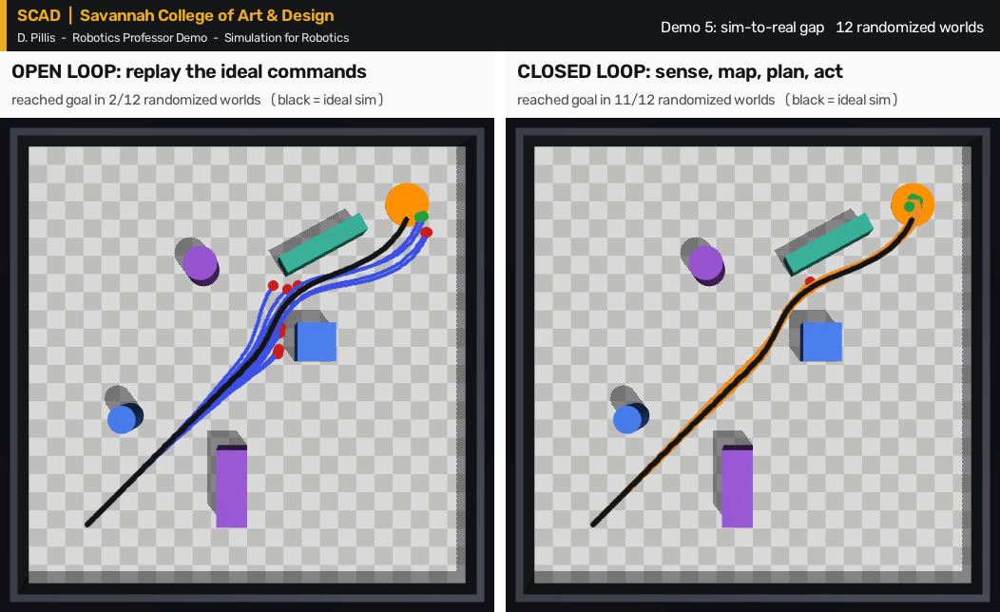

1
Physics playground
Foam, rubber and steel simulations to understand material friction. Try to play with the gravity function1
python demo/01_physics_playground.py
SCAD × Robotics Professor Demo · D. Pillis
Simulating your SCADBot
Prepared for SCAD, Savannah College of Art & Design
Simulate to Fabricate.Virtual/Physical
Simulation accelerates robotics research and education by providing a safe, scalable, and cost-effective environment to test algorithms before deploying on physical hardware. This lecture and demo explore why simulation is indispensable, contrasting leading platforms like NVIDIA Isaac Sim, mjlab, and Unity to guide engine selection for specific research and classroom needs. A live demonstration highlights physics fidelity, sensor emulation, and rapid prototyping capabilities. The session concludes with an interactive Q&A and resource sharing for immediate implementation.
Foam, rubber and steel simulations to understand material friction. Try to play with the gravity function1
python demo/01_physics_playground.py
python demo/02_drive_the_robot.py
The same robot, sensing. Lidar builds a map, A* plans a route, pure pursuit follows it. Camera, depth, lidar, IMU and wheel encoders update live.
python demo/03_sensor_dashboard.py
Camera only: RGB to HSV, threshold the orange beacon, find the blob, steer toward it. Search, track, arrive.
python demo/04_camera_perception.py

Twelve randomized "realities": different floor and tire friction, mass, motor strength, sensor noise and 30 ms of delay.
python demo/05_sim_to_real_gap.py
Three main platforms are discussed here, judged on the three criteria that matter most for robotics: physics realism, GPU acceleration and sensor fidelity.
| NVIDIA Isaac Sim + Isaac Lab | mjlab (MuJoCo + MuJoCo Warp) | Unity + Robotics Hub | |
|---|---|---|---|
| Physics realism | PhysX 5 articulations, Newton backend in 6.0. Strong for rigid bodies and grasping. | MuJoCo, the reference for accurate, stable contact in control and learning research. | PhysX ArticulationBody, tuned for games. Fine for interaction, weaker for precise contact. |
| GPU acceleration | GPU physics; thousands of parallel environments in Isaac Lab. | MuJoCo Warp; thousands of parallel environments on an NVIDIA GPU. | Graphics on the GPU, physics on the CPU. Smaller-scale training with ML-Agents. |
| Sensor fidelity | Highest: ray-traced cameras, lidar and radar, labelled synthetic data. | Rasterised RGB-D, ray-cast rangefinders, IMU, touch, force. | High-quality cameras; other sensors through packages or scripts. |
| Runs on | RTX GPU with 16 GB+, Ubuntu or Windows 11. No macOS. | MuJoCo on any laptop. Training with mjlab needs an NVIDIA GPU. | Any recent laptop, including Macs. |
| Best for | Synthetic data, digital twins, photoreal sensors. OpenUSD fits film and VFX pipelines. | Locomotion, manipulation, learning; teaching dynamics. | Interaction, VR/AR, installations, game-dev students. |
Use Unity when the experience matters most, MuJoCo or mjlab when the physics and learning matter most, and Isaac Sim when the sensors and photorealism matter most. Expect to combine them.
Also covered: Gazebo for ROS 2 robot stacks, Webots for first courses, and Newton, the new open GPU physics engine. Full comparison with sources.
Four handouts go with the session, for students to keep and continue with afterwards.
About fifty terms, from time step to domain randomization, grouped by topic.
Notebooks to start today, platform docs, free books, video courses and key papers.
"Teach a robot to find its way", using the MuJoCo project and the interfaces of Artifcact Arena.
The autonomy loop, a robot file explained, two perception pipelines and a sim-to-real checklist.
Everything in the demo runs on a laptop. Three commands:
git clone https://github.com/mrpillis/scad-robotics-simulation-demo
cd scad-robotics-simulation-demo && pip install -r requirements-demo.txt
python demo/03_sensor_dashboard.pyThis project is a fork of ArtifactArena by Tiwary, Mayo, Behari, Sun, Alabdulkareem, Galatzer-Levy, Katz and Cheung (MIT CSAIL, MIT Media Lab, NYU, UCSF). Their MuJoCo competition engine powers the capstone demo. Physics by MuJoCo.
Lecture notes, handouts and demos by D. Pillis. MIT License.
@article{artifactarena2026,
title = {ArtifactArena: Evaluating Models by What
They Build in the Physical World},
author = {Tiwary, Kushagra and Mayo, David and
Behari, Nikhil and Sun, Xiangzhou and
Alabdulkareem, Abdulrahman and
Galatzer-Levy, Isaac and Katz, Boris and
Cheung, Brian},
year = {2026},
url = {https://artifactarena.ai}
}